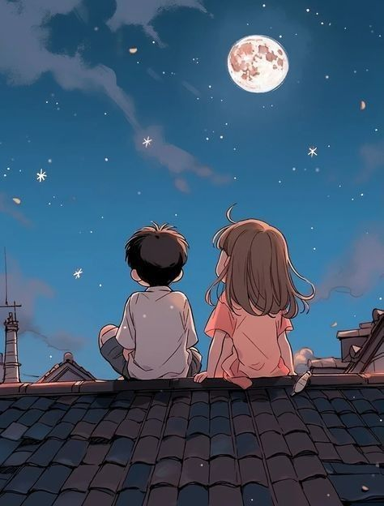

I kept thinking about our conversation yesterday.
Somewhere in the middle of our joking, I think I took your words in a different direction.
Maybe for a moment I felt like I had to explain my way of thinking.
But the truth is…
When I look at the bigger picture of us lately, it doesn’t feel like walls.
It feels like two people who are comfortable with each other.
Somewhere along the way, you became a place that feels a little like home to me.
And maybe that’s exactly why I act the way I do sometimes.